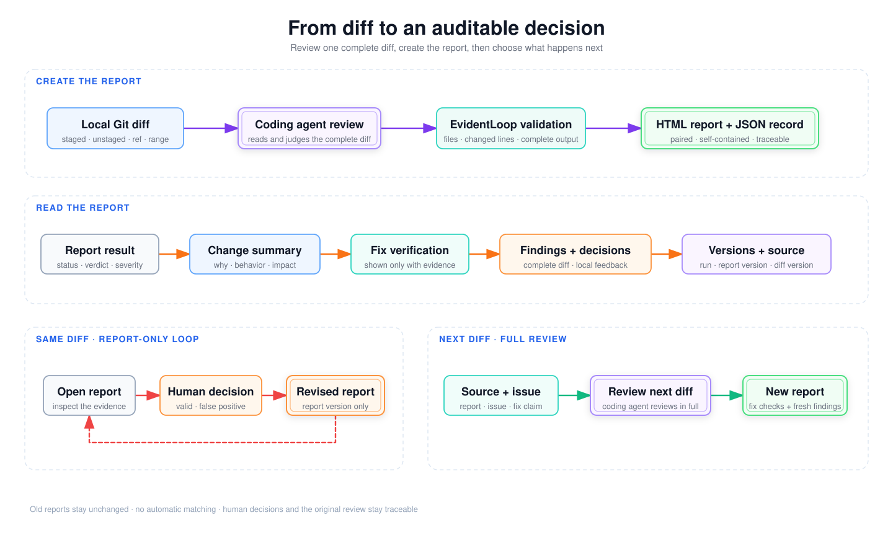

Interaction and evidence
See the workflow, then inspect the real run
The short animation shows how to open a finding, inspect its complete diff, and record a browser-local decision and comment.

Real audit evidence: inspect the 43/43-file self-audit report and its validated JSON. The result is complete / pass_candidate with 0 findings.
One traceable lifecycle
Keep each decision attached to evidence
The first review, a human decision, and a later fix check have different meanings. EvidentLoop keeps those boundaries visible.

-
Review one complete diff
Your coding agent makes the judgment. EvidentLoop validates file identities, changed-line anchors, and completeness, then produces the HTML report with its JSON record.
-
Revise the report, not the code
Human decisions update the report lineage without running another model review or changing business files.
-
Verify a later diff explicitly
A source report, a chosen finding, and a claim start a new full-diff review. EvidentLoop never guesses the match.
Old reports remain unchanged. A missing line or finding is never treated as proof that an issue was fixed.
Start locally
Run it in the repository you want to inspect
EvidentLoop uses the model already available in your coding agent. It does not execute commands found in a diff or in model output.
Install the CLI and Skill
# Try the bundled offline demo
uvx evidentloop demo
# Install for real audits
uv tool install evidentloop
npx skills@latest add evidentloop/evidentloop --skill evidentloop -g
evidentloop doctorThen ask your coding agent: Use EvidentLoop to audit my staged changes and generate the HTML report.
Quick answers
Can I share an audit report?
Yes. The HTML is self-contained and works on static hosting. Redact anything sensitive first; browser-local decisions are not uploaded automatically.
Will feedback trigger another review or change my code?
No—not automatically. Feedback on the same diff only revises the report. Your coding agent changes code or starts a later-diff verification only when you explicitly ask.